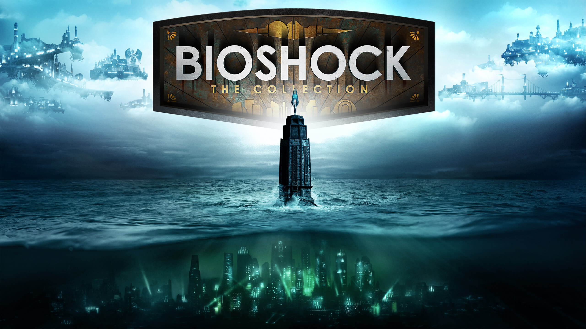
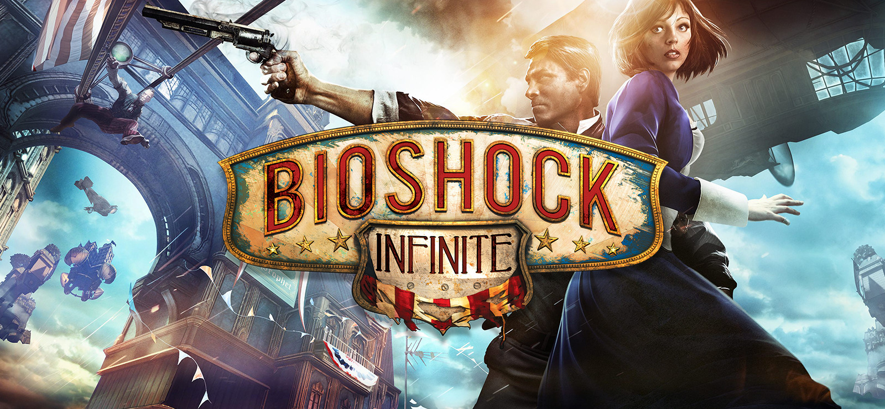

Bioshock: The collection
BioShock es una serie de videojuegos retrofuturistas creada por Ken Levine,
publicada por 2K Games y desarrollada por varios estudios, incluidos Irrational Games y 2K Marin.
A Continuación veremos lo que incluye esta edición y un extra que sale después del éxito de la saga.
Bioshock

"Un hombre puede elegir, yo elegí lo imposible. Construí una ciudad donde el artista no tenía que temer al censor,
donde los grandes no estaban constreñidos por los pequeños, donde el científico no estaba limitado por la nimia moral.
Yo elegí construir Rapture. Pero mi ciudad fue traicionada por los débiles. Así que te pregunto amigo mío, si tu vida
fuera el premio, ¿matarías a los inocentes? ¿Sacrificarías tu humanidad? Todos hacemos elecciones, pero al final,
nuestras elecciones nos hacen a nosotros."
―Andrew Ryan
Esta es una de las premisas del juego que fue lanzado el 21 de agosto de 2007 (PC, Xbox 360), que se da en
la ciudad de bajo el mar llamada Rapture...
Bioshock 2
"Por cada elección, hay un eco. Con cada acto, cambiamos el mundo.
Un hombre eligió una ciudad, sin ley ni dioses, pero otros eligieron la corrupción y así la ciudad cayó.
Si el mundo renaciera a tu imagen, ¿sería el paraíso o la perdición?"
―Sofia Lamb
Continuación de la premisa de la primera entrega que fue publicada el 9 de febrero de 2010...
Bioshock Infinite

En esta entrega nos salimos de Rapture y vamos hacia Columbia, también hay un cambio en los personajes...
Bioshock: Rapture
Rapture es la novela que explica el origen del universo del exitoso videojuego Bioshock
Había terminado la segunda guerra mundial. La política delNew Deal de Roosevelt había cambiado los
Estados Unidos: los impuestos eran muy altos, y las bombas de Hiroshima y Nagasaki auguraban una aniquilación total.
La libertad estaba en crisis, y muchos no se resignaron a perderla.
Entre ellos, un soñador, un inmigrante que salió de la más profunda pobreza y se convirtió en una de las personas más ricas
y admiradas del mundo; Andrew Ryan. Él pensaba que los hombres y mujeres más importantes merecían algo mejor, y por eso
decidió crear una utopía libre de gobiernos, de censura, de restricciones morales para la ciencia, donde se da lo mismo
que recibes. Creó Rapture, la brillante ciudad bajo el mar. Pero esta utopía acabó en una gran tragedia.